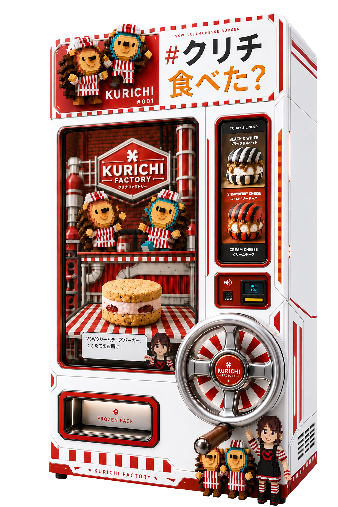

遠目でわかる、大きなサイン
白い筐体に赤いチェックと大きな「#クリチ 食べた？」。街角の遠目でも一瞬で見つかる、写真に残る顔をつくる。
Culture Vending / since 2026
クリームチーズバーガーの、無人支店。
大きな液晶に#クリチの製造ラインが流れ、
フロントのハンドルをぐるぐる回すと、
梱包された冷凍#クリチが出てくる。

24時間、街角で。
待たせへん。冷めてへん。
凍ったまま、本気のままで売る。
Culture Vending ─ カルチャー販売機。
#クリチが街角に出した「支店」。一台ごとに名前と番地を持ち、世界中に増えていく装置。
KURICHI BRANCH は、冷凍パックをただ出す箱ではない。大きな液晶で#クリチの製造ラインを見せ、フロントのハンドルで買う体験をつくる「小さな冷凍ストア」として設計する。
白い筐体に赤いチェックと大きな「#クリチ 食べた？」。街角の遠目でも一瞬で見つかる、写真に残る顔をつくる。
製造ライン、キャラクター、出来上がる瞬間を液晶の中で見せる。商品棚ではなく、#クリチファクトリーの窓にする。
決済後、正面の大きなハンドルを回す。買う行為をただのタップで終わらせず、記憶に残る体験に変える。
排出口から出るのは、梱包された冷凍#クリチ。旅前の手土産にも持ち帰りにも向く、清潔でわかりやすい販売スタイル。
FIRST BRANCH / IN PROGRESS
最初のBRANCHは、いま設計中。
街角に "会いに行けるクリチ" を出すための、
記念すべき #001 を準備している。
場所が確定し次第、ニュースで順次お知らせ予定。
PROJECT IN PROGRESS ─ 2026
VSWでしか出会えない、色と断面まで楽しいクリームチーズバーガー。
支店ごとに、梱包された冷凍パックとして展開予定。手土産にも、自分へのご褒美にも選びやすいラインナップ。
PREMIUM / NY #KURICHI
レモン＆プラリネ
黒と白のストライプバンズに、レモンピール入りクリームチーズとナッツの香ばしいプラリネ。
小麦、乳、卵、くるみ、アーモンド
PREMIUM / AKARENGA #KURICHI
オレンジ＆プラリネ
赤と黒のストライプバンズ。オレンジピールの明るい酸味とプラリネのコクが重なる祝祭の味。
小麦、乳、卵、くるみ、アーモンド、オレンジ
RICE FLOUR / #SOICHI
紅茶バンズ＆いちご
紅茶香る米粉バンズに、豆乳ベースのクリームチーズと大粒いちご。軽やかな次世代スイーツ。
乳、卵
※ 販売商品・限定SKUは支店ごとに変動予定。詳細は順次お知らせ。
販売機の大きな液晶では、kurichi.mp4 を流す予定。製造ライン、断面の色、クリームチーズの厚み、温めた後の食感を一気に見せる。
通りすがりの数秒で「なにこれ？」をつくるための、BRANCHの顔。
クリームチーズとバーガーが街角で出会った。
デリの灯りと、煙と、紙袋のクシャっと音。
気取らへん、けど本気。
大阪のノリが、クリチに体重を載せた。
店舗ではなく、支店。
BRANCHが街に増えていく。これが第三章。
関東・関西・名古屋・福岡、そしていつかブルックリンへ。
支店ナンバリングは、世界地図に増える #クリチ の足跡。
カルチャーの共犯者と組む。
01 / Always Open
無人運営・省人化
人を置かずに、24時間営業の物販体験。電源と1坪あれば成立する。
02 / Brand Asset
場の文脈を変える
ただの自販機ではない。BRANCH は、場のブランドそのものを上げる装置。
03 / Viral
SNS で勝手に拡散
支店ナンバリングがそのまま地名タグになり、設置場所の集客装置になる。
KURICHI BRANCH は、冷凍販売機の形をした小さなポップアップストア。
設置場所の文脈に合わせて、支店名・限定SKU・ステッカー・SNS導線までセットでつくる。
電源と導線があれば設置可能。店舗を増やすより軽く、ポップアップより長く続く。
支店限定、ホテル限定、イベント限定。月替わりの商品が、再訪と投稿のきっかけになる。
支店番号・地名・大型液晶・正面ハンドル・冷凍パック排出口。買う前から写真に残る、街の小さな目印。
補充、温度管理、商品差し替え、販促物の更新までこちらで設計。場所側の負担を軽くする。
機構としては冷凍販売機だが、ブランドとしては「カルチャー販売機 / 街角支店」と呼んでいる。1台ごとに支店名・限定SKUを持ち、ただの物販装置ではなく "ブランド体験" として設計している。
標準筐体で W900 × D800 × H1900mm 程度。電源1口・1坪のスペースがあれば成立する。屋内・半屋外どちらも可。
BRANCH 単位で、アーティスト・IP・地域・ブランドとの共同企画を構想中。座組が決まり次第、順次ニュースで発信予定。